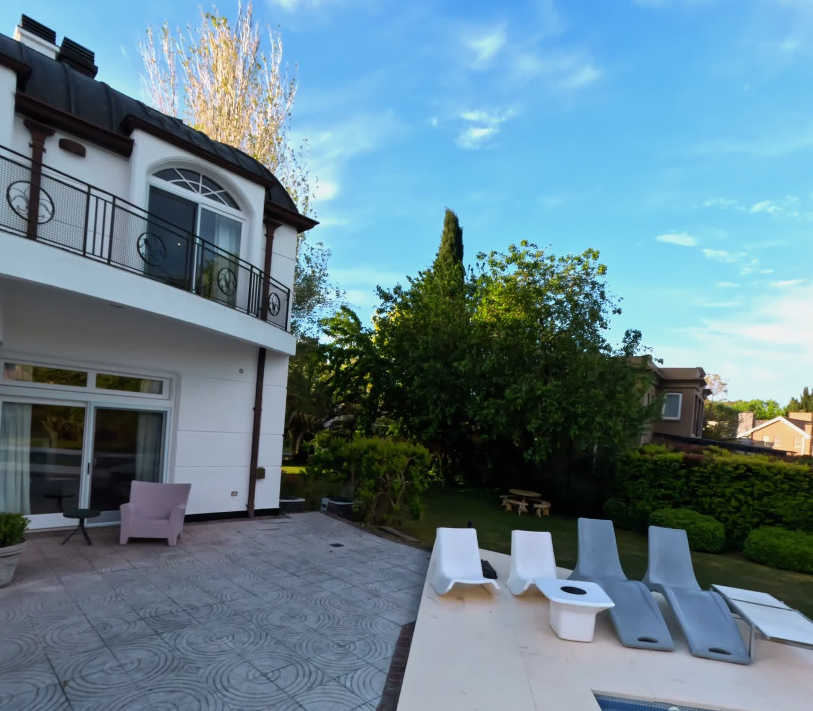
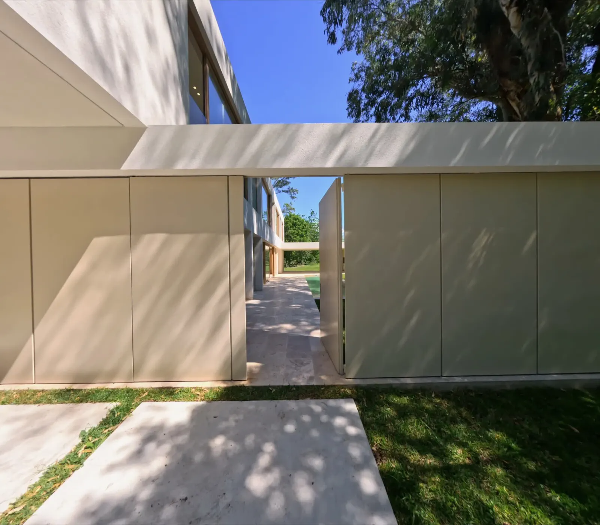
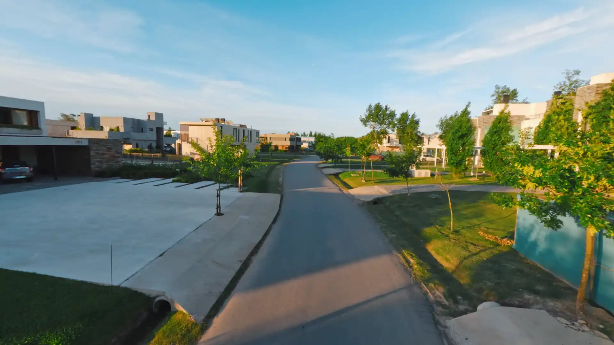
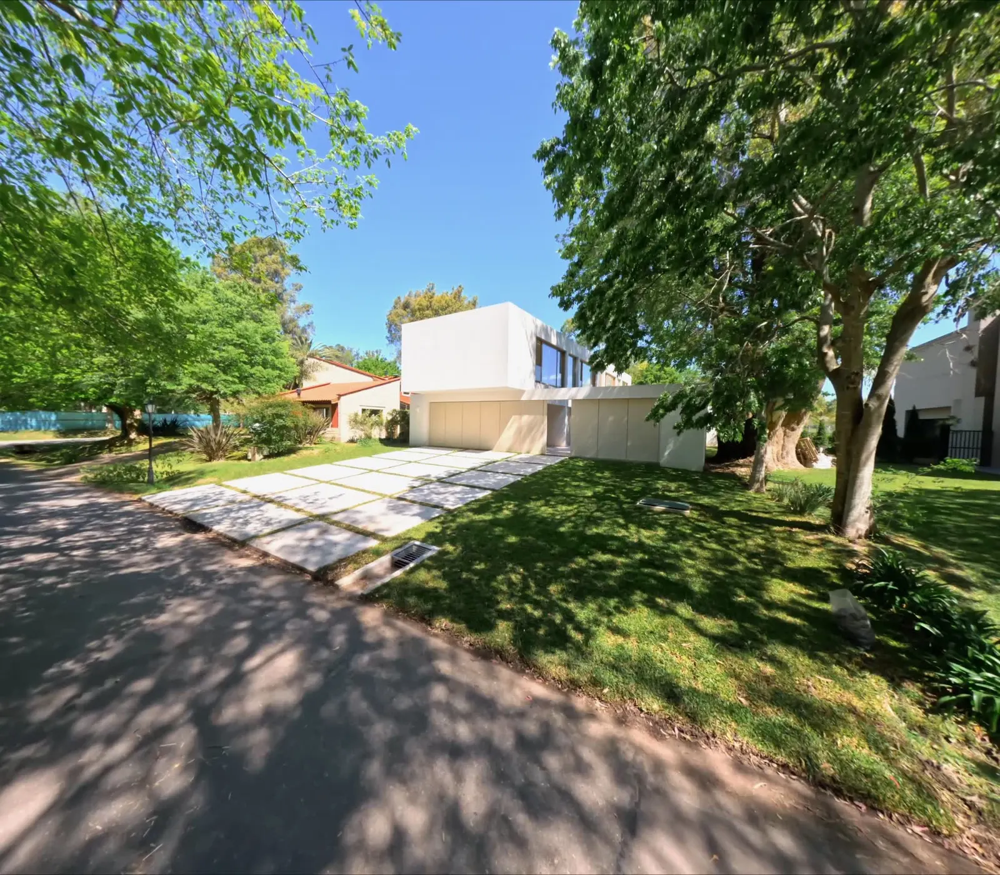
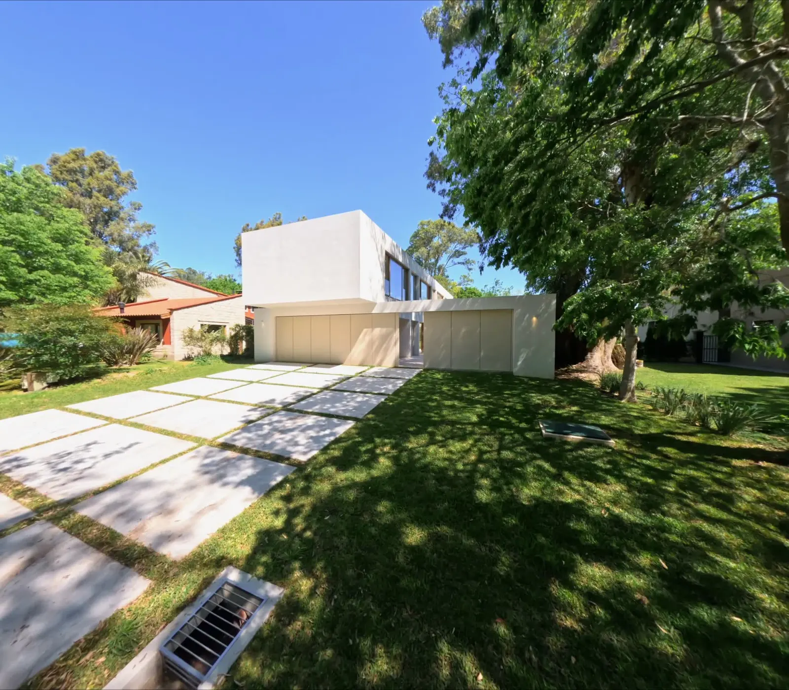

Visita y estudio solar
Inspección del sitio, estudio de orientación geográfica, incidencia de la luz natural y obstáculos.

Planos secuencia FPV y cine aéreo para arquitectura y residencias de autor. Recorridos continuos que interpretan la luz, la escala y la intimidad de cada espacio.
La fachada se presenta despacio, como una primera frase.
Entre dos volúmenes de concreto, la casa se abre.
Travertino, jardín y una línea de agua bajo la luz de la tarde.
(01) Filosofía & Enfoque
Filmamos propiedades como se proyecta la arquitectura: con paciencia, luz natural y un recorrido continuo. Cada movimiento tiene una intención; cada segundo, un motivo espacial.
No hacemos videos inmobiliarios ni efectos vertiginosos. Hacemos cine de arquitectura: planos continuos a la altura de la mirada, desplazamientos lentos y una lectura honesta de los materiales, la gravedad y la luz.
Trabajamos junto a estudios de arquitectura, desarrolladoras y propietarios que entienden que el modo en que se documenta una obra también forma parte de su valor patrimonial.
(02) Film 02
Toma aérea en retroceso. La simetría clásica de estilo francés descubriéndose de forma continua sobre el horizonte de agua de Nordelta.

Un vuelo en retirada que revela la simetría francesa.
La arquitectura clásica en diálogo con el horizonte de agua.



(04) Film 03
Fachada e ingreso principal. Líneas contemporáneas y texturas sobrias en un recorrido envolvente hacia el umbral de entrada.

Volumetría sobria y texturas que dialogan con el entorno.
El umbral principal dando paso hacia el interior.
(05) Servicios
Un plano secuencia ininterrumpido que conecta el exterior, el umbral y los interiores más nobles de la propiedad.
Entorno, orientación solar y escala paisajística. La obra ubicada en su territorio antes de pasar al detalle.
Composiciones cenitales y oblicuas de alta resolución para catálogos editoriales, prensa y monografías.
Piezas verticales diseñadas desde la coreografía del vuelo para redes y plataformas sin pérdida de encuadre.
(06) Film 04
De la intimidad de la suite principal a la inmensidad del horizonte. Un plano secuencia FPV interior-exterior de máxima precisión.

La luz de la tarde recorriendo el espacio íntimo.
Salida al exterior hacia un panorama despejado.



Seis fotogramas de un único plano secuencia continuo 00:00:10:15 total
(07) Método
Inspección del sitio, estudio de orientación geográfica, incidencia de la luz natural y obstáculos.
Diseño de la trayectoria plano por plano: ejes de fuga, velocidades y revelado progresivo de los ambientes.
Jornada técnica en la franja lumínica ideal. Múltiples tomas calibradas hasta conseguir la trayectoria perfecta.
Corrección tonal cinematográfica, balance de travertinos y hormigón, y entrega multiformato en 4K.
“Comprendió la arquitectura mejor que muchas fotos que teníamos de ella. El recorrido se percibe exactamente con la misma emoción que ingresar a la casa.”
(09) Contacto